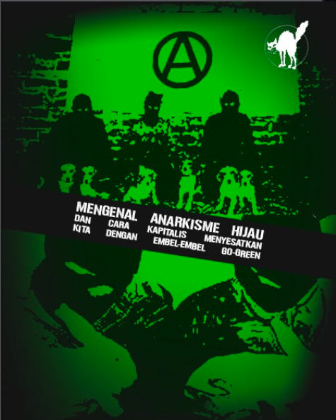

-
Mengenal Anarkisme Dan Greenwashing Kapitalis
30/11/2025
Banjir yang melanda Pulau Sumatra akhir-akhir ini bukanlah suatu hukuman dari alam ataupun sudah "takdir", ini adalah konsekuensi logis dari negara yang lagi-lagi bersekongkol dengan kapitalisme. Dalam kapitalisme, beberapa nyawa orang memang lebih berharga dari nyawa lainnya.Baca Selengkapnya
-
Fetisisme Komoditas
11/10/2025

Di zaman jahiliyah orang-orang nyembah berhala karena takut dikasih ancaman sama dewa langit, tapi di abad-21,
apalagi di late stage capitalism, orang-orang takut dibilang ketinggalan zaman.
Apakah ini murni karena orang-orang emang FOMO? Atau mungkin kapitalisme sudah berhasil menciptakan berhala yang baru? Baca Selengkapnya
-
Fasis Gak Nyalahin Gak Makan
6/6/2025
Kita tahu bahwasanya pasca perang dunia pertama, Jerman dalam kekacauan hebat, inflasi tinggi, harga meroket, rakyat jadi pengangguran, dan Perjanjian Versailles memperdalam luka bangsa Jerman seolah Jerman lah yang menopang semua dosadosa perang dunia pertama.Baca Selengkapnya
-
Anti-Otoritarian — Anti Vanguardisme
29/6/2025

1. Tujuan utama dibuatnya Leninisme adalah untuk menyesuaikan tafsir komunisme nya Marx agar sesuai dengan kondisi semi-feodal Rusia saat itu, beliau (Lenin) berfikir bahwasanya daripada menunggu pekerja teredukasi secara politis, lebih baik kita mendirikan sebuah partai yang disiplin yang akan di-isikan oleh orang-orang yang faham betul akan komunisme, dan akan membimbing para pekerja menuju peradaban yang komunis. Jadilah partai pelopor (vanguard party)
2. Permasalahannya adalah: dengan dibuatnya partai pelopor secara tidak langsung Lenin memecah masyarakat menjadi dua, yaitu yang sadar secara politis dan yang belum matang secara politis.Baca Selengkapnya